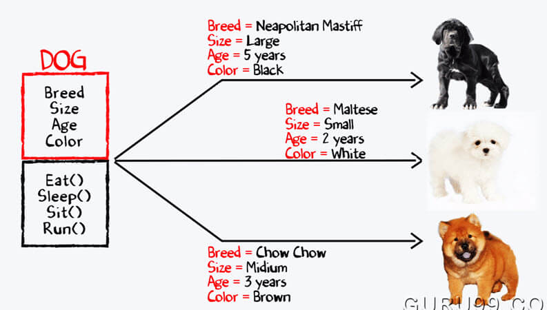

Welcome to JAVA
- INTRODUCTION
- History
- Java programming language is named JAVA. Why?
- Java Terminology
- Java Virtual Machine(JVM): This is generally referred to as JVM. There are three execution phases of a program. They are written, compile and run the program. Writing a program is done by java programmer like you and me. The compilation is done by JAVAC compiler which is a primary Java compiler included in the Java development kit (JDK). It takes Java program as input and generates bytecode as output. In Running phase of a program, JVM executes the bytecode generated by the compiler. Now, we understood that the function of Java Virtual Machine is to execute the bytecode produced by the compiler. Every Operating System has different JVM but the output they produce after the execution of bytecode is the same across all the operating systems. This is why Java is known as a platform-independent language.
- Bytecode in the Development process: As discussed, Javac compiler of JDK compiles the java source code into bytecode so that it can be executed by JVM. It is saved as .class file by the compiler. To view the bytecode, a disassembler like javap can be used.
- Java Development Kit(JDK): While we were using the term JDK, when we learn about bytecode and JVM . So, as the name suggests, it is a complete java development kit that includes everything including compiler, Java Runtime Environment (JRE), java debuggers, java docs etc. For the program to execute in java, we need to install JDK in our computer in order to create, compile and run the java program.
- Java Runtime Environment (JRE): JDK includes JRE. JRE installation on our computers allow the java program to run, however, we cannot compile it. JRE includes a browser, JVM, applet supports and plugins. For running the java program, a computer needs JRE.
- Garbage Collector: In Java, programmers can’t delete the objects. To delete or recollect that memory JVM has a program called Garbage Collector. Garbage Collector can recollect the of objects that are not referenced. So Java makes the life of a programmer easy by handling memory management. However, programmers should be careful about their code whether they are using objects that have been used for a long time. Because Garbage cannot recover the memory of objects being referenced.
- ClassPath: The classpath is the file path where the java runtime and Java compiler looks for .class files to load. By default, JDK provides many libraries. If you want to include external libraries they should be added to the classpath.
- Primary/Main Features of Java
- Platform Independent: Compiler converts source code to bytecode and then the JVM executes the bytecode generated by the compiler. This bytecode can run on any platform be it Windows, Linux, macOS which means if we compile a program on Windows, then we can run it on Linux and vice versa. Each operating system has different JVM, but the output produced by all the OS is same after the execution of bytecode. That is why we call java as platform-independent language.
- Object-Oriented Programming Language: Organizing the program in the terms of collection of objects is a way of object-oriented programming, each of which represents an instance of class.
Four main concepts of Object-Oriented programming are:
Abstraction
Encapsulation
Inheritance
Polymorphism - Simple: Java is one of the simple languages as it does not have complex features like pointers, operator overloading, Multiple inheritance, Explicit memory allocation.
- Robust: Java language is robust that means reliable. It is developed in such a way that it puts a lot of effort in checking of errors as early as possible, that is why java compiler is able to detect even those errors that are not easy to detect by another programming language. The main features of java that make it robust are garbage collection, Exception Handling and memory allocation.
- Secure: In java, we don’t have pointers, and so we cannot access out of bound arrays i.e it shows ArrayIndexOutOfBoundsException if we try to do so. That’s why several security flaws like stack corruption or buffer overflow is impossible to exploit in Java.
- Multithreading: Java supports multithreading. It is a Java feature that allows concurrent execution of two or more parts of a program for maximum utilization of CPU.
- Portable: As we know, java code written on one machine can be run on another machine. The platform-independent feature of java in which its platform-independent bytecode can be taken to any platform for execution makes java portable.
UTILITY
- It is used for:
- Mobile applications (specially Android apps)
- Desktop applications
- Web applications
- Web servers and application servers
- Games
- Database connection
- And much, much more!
- Why Use Java?
- Java works on different platforms (Windows, Mac, Linux, Raspberry Pi, etc.)
- It is one of the most popular programming language in the world
- It is easy to learn and simple to use
- It is open-source and free
- It is secure, fast and powerful
- It has a huge community support (tens of millions of developers)
- Java is an object oriented language which gives a clear structure to programs and allows code to be reused, lowering development costs
- As Java is close to C++ and C#, it makes it easy for programmers to switch to Java or vice versa
Basics
- Classes and Objects Class − A class can be defined as a template/blueprint that describes the behavior/state that the object of its type support.
- Access Modifiers
- Private: The access level of a private modifier is only within the class. It cannot be accessed from outside the class.
- Default: The access level of a default modifier is only within the package. It cannot be accessed from outside the package. If you do not specify any access level, it will be the default.
- Protected: The access level of a protected modifier is within the package and outside the package through child class. If you do not make the child class, it cannot be accessed from outside the package.
- Public: The access level of a public modifier is everywhere. It can be accessed from within the class, outside the class, within the package and outside the package. There are many non-access modifiers, such as static, abstract, synchronized, native, volatile, transient, etc. Here, we are going to learn the access modifiers only.
- Constructors Constructors are used to assign values to the class variables at the time of object creation, either explicitly done by the programmer or by Java itself (default constructor). Each time an object is created using new() keyword at least one constructor (it could be default constructor) is invoked to assign initial values to the data members of the same class. A constructor is invoked at the time of object or instance creation.There are two types of constructors in Java: no-arg constructor, and parameterized constructor.
- Polymorphism Polymorphism in Java is a concept by which we can perform a single action in different ways. Polymorphism is derived from 2 Greek words: poly and morphs. The word "poly" means many and "morphs" means forms. So polymorphism means many forms. There are two types of polymorphism in Java: compile-time polymorphism and runtime polymorphism. We can perform polymorphism in java by method overloading and method overriding.
- Inheritance Inheritance can be defined as the process where one class acquires the properties (methods and fields) of another. With the use of inheritance the information is made manageable in a hierarchical order. The class which inherits the properties of other is known as subclass (derived class, child class) and the class whose properties are inherited is known as superclass (base class, parent class). extends Keyword extends is the keyword used to inherit the properties of a class.
- Exception Handling An exception (or exceptional event) is a problem that arises during the execution of a program. When an Exception occurs the normal flow of the program is disrupted and the program/Application terminates abnormally, which is not recommended, therefore, these exceptions are to be handled. An exception can occur for many different reasons. Following are some scenarios where an exception occurs.
- A user has entered an invalid data.
- A file that needs to be opened cannot be found.
- A network connection has been lost in the middle of communications or the JVM has run out of memory.
JAVA was developed by Sun Microsystems Inc in the year 1991, later acquired by Oracle Corporation. It was developed by James Gosling and Patrick Naughton. It is a simple programming language. Java makes writing, compiling, and debugging programming easy. It helps to create reusable code and modular programs. Java is a class-based, object-oriented programming language and is designed to have as few implementation dependencies as possible. A general-purpose programming language made for developers to write once run anywhere that is compiled Java code can run on all platforms that support Java. Java applications are compiled to byte code that can run on any Java Virtual Machine. The syntax of Java is similar to c/c++.
Java’s history is very interesting. It is a programming language created in 1991. James Gosling, Mike Sheridan, and Patrick Naughton, a team of Sun engineers known as the Green team initiated the Java language in 1991. Sun Microsystems released its first public implementation in 1996 as Java 1.0. It provides no-cost -run-times on popular platforms. Java1.0 compiler was re-written in Java by Arthur Van Hoff to strictly comply with its specifications. With the arrival of Java 2, new versions had multiple configurations built for different types of platforms. In 1997, Sun Microsystems approached the ISO standards body and later formalized Java, but it soon withdrew from the process. At one time, Sun made most of its Java implementations available without charge, despite their proprietary software status. Sun generated revenue from Java through the selling of licenses for specialized products such as the Java Enterprise System. On November 13, 2006, Sun released much of its Java virtual machine as free, open-source software. On May 8, 2007, Sun finished the process, making all of its JVM’s core code available under open-source distribution terms. The principles for creating java were simple, robust, secured, high performance, portable, multi-threaded, interpreted, dynamic, etc. James Gosling in 1995 developed Java, who is known as the Father of Java. Currently, Java is used in mobile devices, internet programming, games, e-business, etc.
After the name OAK, the team decided to give a new name to it and the suggested words were Silk, Jolt, revolutionary, DNA, dynamic, etc. These all names were easy to spell and fun to say, but they all wanted the name to reflect the essence of technology. In accordance with James Gosling, Java the among the top names along with Silk, and since java was a unique name so most of them preferred it. Java is the name of an island in Indonesia where the first coffee(named java coffee) was produced. And this name was chosen by James Gosling while having coffee near his office. Note that Java is just a name, not an acronym.
Before learning Java, one must be familiar with these common terms of Java.
6. Distributed: We can create distributed applications using the java programming language. Remote Method Invocation and Enterprise Java Beans are used for creating distributed applications in java. The java programs can be easily distributed on one or more systems that are connected to each other through an internet connection.
Object − Objects have states and behaviors.
Example: A dog has states - color, name, breed as well as behaviors – wagging the tail, barking, eating. An object is an instance of a class. ;
There are two types of modifiers in Java: access modifiers and non-access modifiers.
The access modifiers in Java specifies the accessibility or scope of a field, method, constructor, or class. We can change the access level of fields, constructors, methods, and class by applying the access modifier on it.
There are four types of Java access modifiers:
s